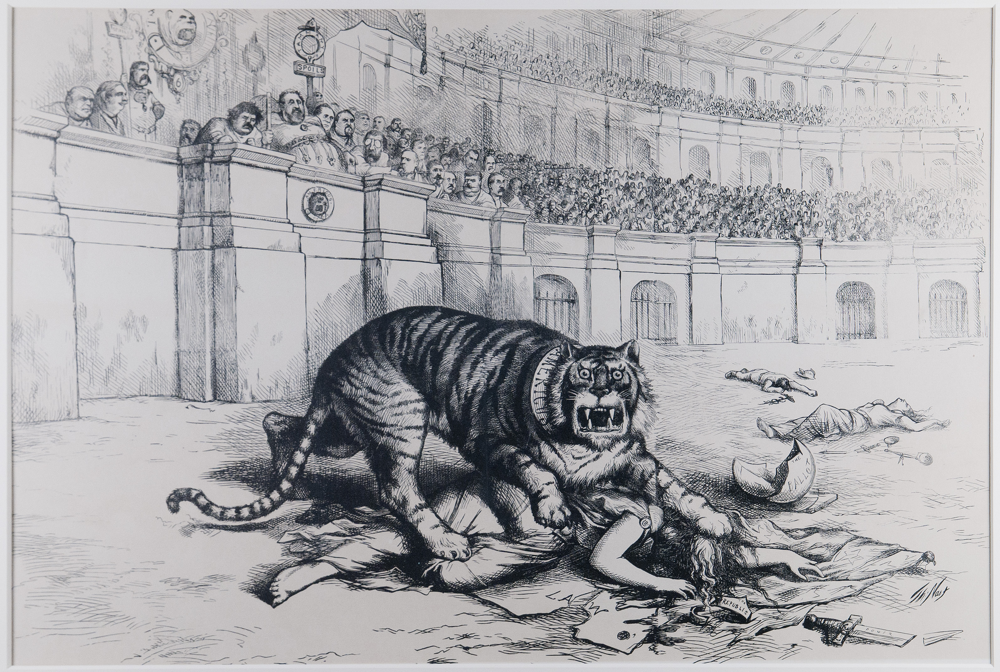

5. Blokea: Grafika Politikoa eta Publizitatearen Sorrera

Thomas Nast-en karikatura: Irudia testu idatzia baino indartsuagoa denean.
Grafika politikoaren eta publizitate modernoaren garapenari dagokionez, XIX. mendearen amaierako eraldaketak funtsezkoak izan ziren diseinuaren indar soziala eta komertziala finkatzeko. Aldaketaren motorra ez zen soilik teknologikoa izan, baizik eta irudiak gizartean eragiteko duen gaitasunaren kontzientzia hartzea. Ildo horretatik, Thomas Nast izan zen prozesu honen ardatz nagusietako bat; bere karikaturak erabiliz, ustelkeria politikoaren aurkako borroka bisuala gidatu zuen. New Yorkeko Tammany Hall-eko William "Boss" Tweed-en boterea kolokan jarri zuen Nastek, irudiak testu idatziak baino indar handiagoa zuela erakutsiz; Tweedek berak aitortu zuenez, bere hautesleek ez zekiten irakurtzen, baina ezin zuten saihestu "malditoko marrazki" haiek ulertzea. Horrez gain, gaur egun oraindik erabiltzen diren ikur politikoak, hala nola elefante errepublikarra eta asto demokrata, Nast-en sorkuntza intelektualaren emaitza dira.
Gizarte eta teknologia eraginari erreparatuz, Howard Pyle ilustratzailearen lana ezinbestekoa da irudiaren hedapen masiboa ulertzeko. Pylek bere estilo dramatikoa eta narratiboa garaiko inprimatze-teknika berrietara egokitu zuen, bereziki erdiko tonuen (halftone) prozesuarekin zuen harreman estuaren bidez. Berrikuntza teknologiko horrek aukera eman zuen ilustrazioetan itzal eta bolumen gradazio konplexuak erreproduzitzeko, ordura arteko grabatu soilak zaharkituta utziz. Fenomeno horrek, ondorioz, informazio bisuala eta literaturaren arteko lotura indartu zuen, herritarren alfabetatze maila igotzen ari zen testuinguru batean, kalitatezko irudiak guztiontzat eskuragarriago bihurtuz.
Publizitatearen profesionalizazioan, N. W. Ayer and Son agentziak diseinuaren eta estrategiaren arteko haustura hori sendotu zuen. Agentzia honek ordura arteko publizitate eredu artisaua aldatu zuen, "kontratu irekiaren" kontzeptua sortuz; horren bidez, diseinatzailea eta iragarlea lankidetza estrategiko batean elkartu ziren. Alde batetik, artisauaren irudia behin betiko baztertu eta agentzia modernoaren egitura sortu zen, non proiektuaren sorkuntza intelektuala (kopia eta arte-zuzendaritza) eta fabrikazio fisikoa prozesu independente bihurtu ziren. Lehen esandako guztia kontutan hartuta, esan dezakegu N. W. Ayer and Son agentziak diseinu grafikoa tresna komertzial gisa definitu zuela, publizitatea eguneroko bizitzaren parte bihurtuz.